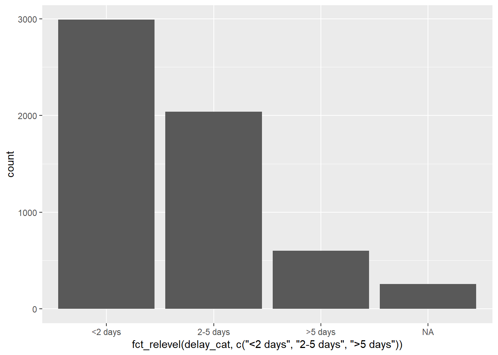
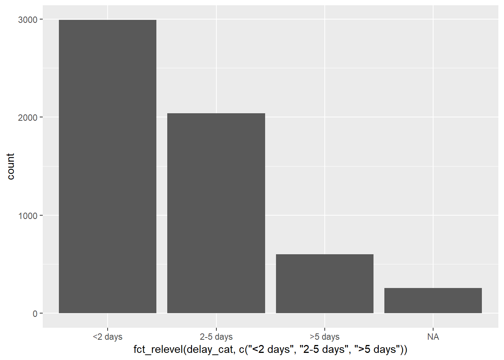
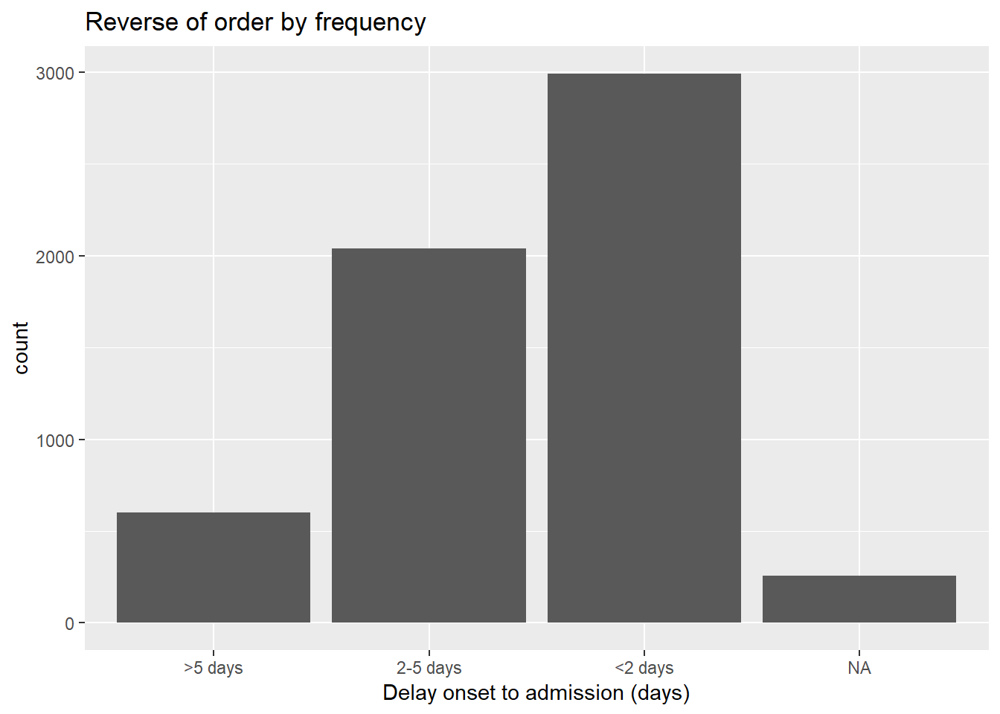
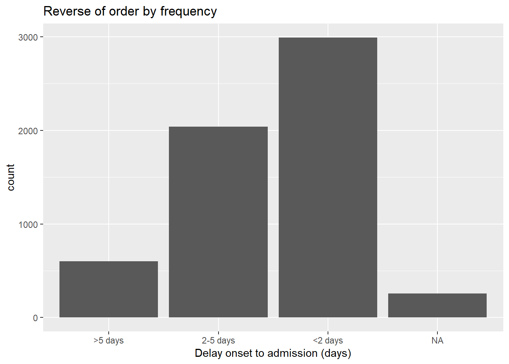
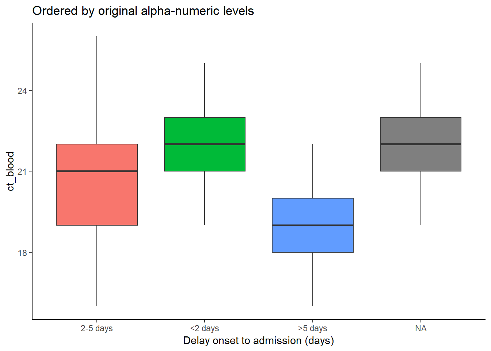
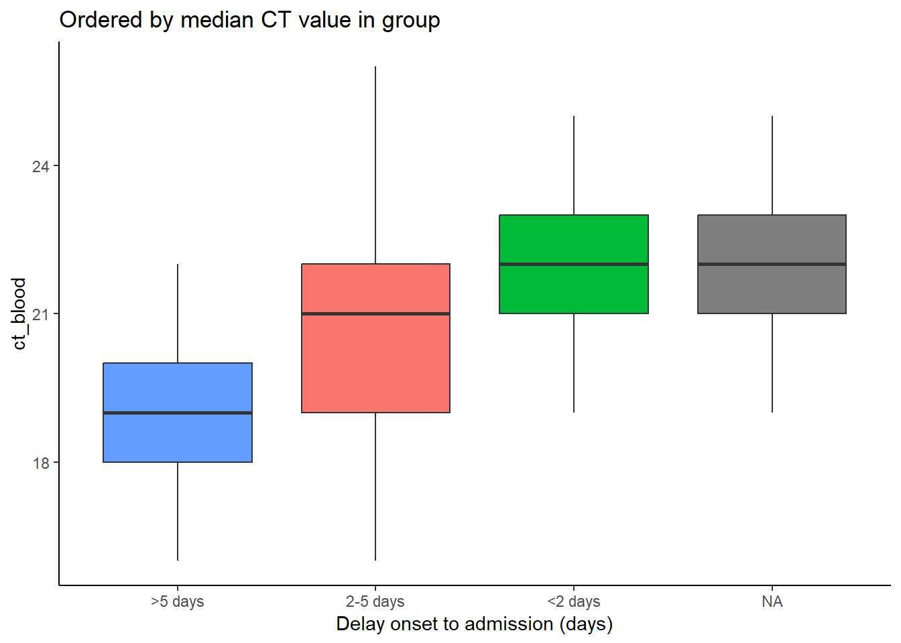

11 Faktörler

R’da faktörler, sabit, kabul edilebilir değerler kümesiyle sıralı kategorilere izin veren bir veri sınıfıdır.
Tipik olarak, değerleri (“levels”), grafik ve tablolarda alfabetik olmayan bir şekilde görüntülenebilmeleri için özel bir sıralamaya tabi tutmak isterseniz bir sütunu karakter veya sayısal sınıftan bir faktöre dönüştürmeniz gerekir. Faktörlerin diğer bir yaygın kullanımı, verilerin geçici olarak yok olması nedeniyle oluşabilecek dalgalanmamaları engellemek için grafik açıklamalarını standart hale getirmektir.
Bu sayfa, forcats (“for ve kategorik değişkenler” için kısa bir ad) paketi ve bazı R tabanındaki fonkisyonların kullanımını göstermektedir. Epidemiyolojik haftalarla ilgili özel faktör vakaları için lubridat ve aweek kullanımına da değiniyoruz.
forcats fonksiyonlarının tam listesi çevrimiçi olarak burada bulunabilir. Aşağıda en yaygın olanlardan bazılarını gösteriyoruz.
11.1 Hazırlık
Paketlerin yüklenmesi
Aşağıdaki kod parçası, analizler için gereken paketlerin yüklenmesini göstermektedir. Bu el kitabında, gerekirse paketi kuran ve kullanım için yükleyen pacman’dan p_load() vurgulamaktayız. R tabanından library() ile kurulu paketleri de yükleyebilirsiniz. R paketleri hakkında daha fazla bilgi için [R temelleri] sayfasına bakın.
pacman::p_load(
rio, # içe/dışa aktar
here, # dosya yolu
lubridate, # tarihlerle çalışma
forcats, # faktörler
aweek, # otomatik faktör seviyeleri ile epiweeks oluştur
janitor, # tablolar
tidyverse # data yönetim ve görselleştirmesi
)Veriyi içe aktarma
Simüle edilmiş bir Ebola salgınına ait vakaların veri setini içe aktarıyoruz. Takip etmek isterseniz, “temiz satır listesi” dosyasını indirmek için tıklayın. (.rds dosyası olarak). Verilerinizi rio paketinden import() işleviyle içe aktarın (.xlsx, .rds, .csv gibi birçok dosya türünü kabul eder - ayrıntılar için [İçe ve dışa aktarma] sayfasına bakın).
# veri setini indir
linelist <- import("linelist_cleaned.rds")Yeni kategorik değişken
Bu sayfada gösterim için ortak bir senaryo kullanacağız - yeni bir kategorik değişkenin oluşturulması.
Sayısal bir sütunu sınıf faktörüne dönüştürürseniz, bunun üzerinde sayısal istatistikleri hesaplayamayacağınızı unutmayın.
Sütun oluşturma
Biz, mevcut days_onset_hosp sütununu (semptom başlangıcından hastaneye kabule kadar geçen gün) kullanarak her satırı birkaç kategoriden birine sınıflandırıp yeni bir delay_cat sütunu oluşturuyoruz. Bunu, her satıra sırayla mantıksal ölçütleri (sağ taraf) uygulayan ve yeni delay_cat sütununa karşılık gelen sol taraf değerini döndüren, dplyr paktenin fonksiyonu case_when() ile yapıyoruz. [Temizleme verileri ve temel işlevler] bölümünde case_when() hakkında daha fazla bilgi edinebilirsiniz.
Varsayılan değer sırası
case_when() ile oluşturulduğu gibi, yeni delay_cat sütunu, karakter sınıfının kategorik bir sütunudur - henüz bir faktör değildir. Bu nedenle, bir sıklık tablosunda, benzersiz değerlerin varsayılan bir alfa-numerik düzende sıralandığını görüyoruz - bu, sezgisel olarak pek mantıklı olmayan bir sıradır:
table(linelist$delay_cat, useNA = "always")##
## <2 days >5 days 2-5 days <NA>
## 2990 602 2040 256Benzer şekilde, bir çubuk grafiği yaparsak, değerler de x ekseninde bu sırayla görünür (R’deki en yaygın görselleştirme paketi olan ggplot2 hakkında daha fazla bilgi için ggplot temelleri sayfasına bakın).

11.2 Faktöre dönüştürme
Bir karakteri veya sayısal sütunu faktör sınıfına dönüştürmek için, forcats paketindeki herhangi bir fonksiyonu kullanabilirsiniz (birçoğu aşağıda ayrıntılı olarak verilmiştir). Bu fonksiyonlarla veriler sınıf faktörüne dönüşecek ve daha sonra seviyelerin belirli şekilde sıralanmasını gerçekleşecek veya buna izin verilecek - örneğin fct_relevel() kullanmak seviye sırasını manuel olarak belirlemenizi sağlar. as_factor() fonksiyonu, başka bir özellik eklemeden sınıfı basitçe dönüştürür.
R tabanı fonksiyonu olan factor(), bir sütunu faktöre dönüştürür ve karakter vektöründeki levels = argümanına göre seviyelerin sırasını manuel olarak düzenlemenizi sağlar.
Aşağıda, delay_cat sütununu sınıf karakterinden sınıf faktörüne dönüştürmek için mutate() ve fct_relevel() kullanıyoruz. delay_cat sütunu, yukarıdaki Hazırlık bölümünde oluşturulmuştur.
linelist <- linelist %>%
mutate(delay_cat = fct_relevel(delay_cat))The unique “values” in this column are now considered “levels” of the factor. The levels have an order, which can be printed with the base R function levels(), or alternatively viewed in a count table via table() from base R or tabyl() from janitor. By default, the order of the levels will be alpha-numeric, as before. Note that NA is not a factor level.
levels(linelist$delay_cat)## [1] "<2 days" ">5 days" "2-5 days"fct_relevel() fonksiyonu, seviye sırasını manuel olarak belirlemenize izin veren ek bir özelliğe sahiptir. Düzey değerlerini, aşağıda gösterildiği gibi virgülle ayırarak sırayla, tırnak içinde yazmanız yeterlidir. Yazımın değerlerle tam olarak eşleşmesi gerektiğini unutmayın. Verilerde mevcut olmayan düzeyler oluşturmak istiyorsanız, bunun yerine fct_expand() kullanın).
linelist <- linelist %>%
mutate(delay_cat = fct_relevel(delay_cat, "<2 days", "2-5 days", ">5 days"))Artık seviyelerin bir önceki komutta belirtildiği gibi mantıklı bir sırayla sıralandığını görebiliriz.
levels(linelist$delay_cat)## [1] "<2 days" "2-5 days" ">5 days"Şimdi tablodaki sırası da daha sezgisel bir anlam ifade ediyor.
11.3 Seviye ekleme ve çıkarma
Ekleme
Bir faktöre seviye eklemeniz gerekiyorsa, bunu fct_expand() ile yapabilirsiniz. Sütun adını ve ardından yeni seviyeleri (virgülle ayırarak) yazmanız yeterlidir. Değerleri tablolaştırarak yeni seviyeleri ve sıfır sayılarını görebiliriz. R tabanından table()ı veya janitor’dan tabyl() kullanabilirsiniz:
linelist %>%
mutate(delay_cat = fct_expand(delay_cat, "Not admitted to hospital", "Transfer to other jurisdiction")) %>%
tabyl(delay_cat) # print table## delay_cat n percent valid_percent
## <2 days 2990 0.50781250 0.5308949
## 2-5 days 2040 0.34646739 0.3622159
## >5 days 602 0.10224185 0.1068892
## Not admitted to hospital 0 0.00000000 0.0000000
## Transfer to other jurisdiction 0 0.00000000 0.0000000
## <NA> 256 0.04347826 NANot: Eksik değerleri (NA) seviyelere kolayca eklemek için özel bir forcats fonksiyonu mevcuttur. Aşağıdaki Eksik değerler ile ilgili bölüme bakın.
Çıkarma
fct_drop()ı kullanırsanız, sıfır sayımlı “kullanılmayan” seviyeler, seviyeler grubundan çıkarılacaktır. Yukarıda eklediğimiz seviyeler (“Hastaneye kabul edilmedi”) bir seviye olarak mevcuttur, ancak hiçbir satır aslında bu değere sahip değildir. Böylece, faktör sütunumuza fct_drop() uygulanarak çıkarılır:
## delay_cat n percent valid_percent
## <2 days 2990 0.50781250 0.5308949
## 2-5 days 2040 0.34646739 0.3622159
## >5 days 602 0.10224185 0.1068892
## <NA> 256 0.04347826 NA11.4 Seviye sırasını düzenleme
forcats paketi, faktör düzeylerinin sırasını kolayca ayarlamak için kullanışlı fonksiyonlar da sunar (bir sütun sınıf faktörü olarak tanımlandıktan sonra):
Bu fonksiyonlar, iki bağlamda faktör sütununa uygulanabilir:
- Her zamanki gibi veri çerçevesindeki sütuna uygulanır, böylece değişen veriler daha sonra da kullanılabilir
- Bir grafik içine uygulanabilir, böylece değişiklik sadece grafik içinde kalır
Elle düzenleme
Bu fonksiyon, faktör seviyelerini manuel olarak sıralamak için kullanılır. Faktör olmayan bir sütunda kullanılırsa, sütun önce sınıf faktörüne dönüştürülür.
Parantez içinde önce faktör sütun adını girin, ardından aşağıdakilerden birini sağlayın:
- Tüm seviyeleri istenen sırada (karakter vektörü
c()olarak) veya - Bir seviye ve
after =argümanı kullanılarak düzeltilmiş sıralama
Burada, (zaten Faktör sınıfı olan) delay_cat sütununu yeniden tanımlamaya ve istenen tüm düzey sırasını belirtmeye bir örnek verilmiştir.
# seviye sırasını yeniden düzenle
linelist <- linelist %>%
mutate(delay_cat = fct_relevel(delay_cat, c("<2 days", "2-5 days", ">5 days")))Sadece bir seviyeyi taşımak istiyorsanız, bunu tek başına fct_relevel() olarak belirtebilir ve after = argümanına hangi sırada olması gerektiğini belirtmek için sayı verebilirsiniz. Örneğin, aşağıdaki komut “<2 gün” ifadesini ikinci konuma kaydırır:
# seviye sırasını yeniden düzenle
linelist %>%
mutate(delay_cat = fct_relevel(delay_cat, "<2 days", after = 1)) %>%
tabyl(delay_cat)Grafik içinde
forcats komutları, veri çerçevesinde veya yalnızca bir grafik içinde seviye sırasını ayarlamak için kullanılabilir. Sütun adını grafik içinde ggplot()un “sarma” komutunu kullanarak, tersine çevirebilir veya yeniden seviyelendirebilirsiniz. Değişim yalnızca bu grafik için geçerli olacaktır.
Aşağıda, ggplot() ile iki grafik oluşturulmuştur (ggplot temelleri sayfasına bakın). İlkinde, delay_cat sütunu, “satır listesi” verisinde olduğu gibi varsayılan düzey sırası ile grafiğin x eksenine eşlenir. İkinci örnekte fct_relevel() içine sarılmış ve grafikteki sırası değiştirilmiştir.
# Alfa-numerik varsayılan sıra - ggplot'ta düzenleme yapılmadı
ggplot(data = linelist)+
geom_bar(mapping = aes(x = delay_cat))
# ggplot içinde faktör seviyesi düzenlendi
ggplot(data = linelist)+
geom_bar(mapping = aes(x = fct_relevel(delay_cat, c("<2 days", "2-5 days", ">5 days")))) 

Varsayılan x ekseni başlığının oldukça karmaşık olduğuna dikkat edin - bu başlığı ggplot2 labs() argümanı ile değiştirebilirsiniz.
Tersine döndürme
Seviye sırasını tersine çevirmek işlemi oldukça yaygındır. Faktörü fct_rev() ile sarmanız yeterlidir.
Gerçek faktör seviyelerini değil de yalnızca bir grafiğin açıklamasını tersine çevirmek istiyorsanız, bunu guides() ile yapabileceğinizi unutmayın (bkz. ggplot ipuçları).
Sıklığa göre
Değerleri verilerde görünme sıklığına göre sıralamak için fct_infreq() kullanın. Eksik değerler (NA), açık bir düzeye dönüştürülmediği sürece otomatik olarak sona eklenir (bkz. bu bölüm). fct_rev() ile bir daha sarmalayarak sırayı tersine çevirebilirsiniz.
Bu fonksiyon, aşağıda gösterildiği gibi bir ggplot() içinde kullanılabilir.
# sıklığa göre sırala
ggplot(data = linelist, aes(x = fct_infreq(delay_cat)))+
geom_bar()+
labs(x = "Delay onset to admission (days)",
title = "Ordered by frequency")
# sıralamayı tersine çevir
ggplot(data = linelist, aes(x = fct_rev(fct_infreq(delay_cat))))+
geom_bar()+
labs(x = "Delay onset to admission (days)",
title = "Reverse of order by frequency") 

Karşılaşmaya göre
Seviye sırasını, ilk satırdan başlayarak verilerdeki karşılaşma sırasına uyacak şekilde ayarlamak için fct_inorder() fonksiyonunu kullanın. Bu komut, veri çerçevesindeki verileri arrange() fonksiyonu ile düzenledikten sonra faktör sırasını tekrardan ayarlamak için faydalı olacaktır.
Başka bir sütunun özet istatistiğine göre
Bir sütunun seviyelerini başka bir sütunun özet istatistiğine göre sıralamak için fct_reorder()yı kullanabilirsiniz. Görsel olarak, bu, çubukların/noktaların grafik boyunca istikrarlı bir şekilde yükseldiği veya alçaldığı hoş grafiklerle sonuçlanabilir.
Aşağıdaki örneklerde, x ekseni delay_cat ve y ekseni ct_blood (döngü eşiği) sayısal sütunudur. Kutu grafikleri, delay_cat grubuna göre CT değeri dağılımını gösterir. Kutu grafiklerini grup medyan CT değerine göre artan sırada sıralamak istiyoruz.
Aşağıdaki ilk örnekte, varsayılan sıra olarak alfa-numerik sırası kullanılır. Kutu çizim yüksekliklerinin karışık olduğunu ve belirli bir sırada olmadığını görebilirsiniz. İkinci örnekte ise, delay_cat sütunu (x eksenine eşlenmiştir) fct_reorder() içine sarılmıştır, ct_blood sütunu ikinci ve medyan üçüncü argüman olarak verilmiştir. (maks, ortalama, min vb. de kullanabilirsiniz). Böylece, delay_cat seviyelerinin sırası artan medyan CT değerlerini yansıtacaktır. Bu, ikinci grafikte gösterilmektedir - kutu çizimleri yükselecek şekilde yeniden düzenlenmiştir. Açık bir düzeye dönüştürülmediği sürece, “NA”nın (eksik) sonunda nasıl görüldüğüne dikkat edin.
# kutu grafiği orjinal faktör seviyelerine göre sıralanmıştır
ggplot(data = linelist)+
geom_boxplot(
aes(x = delay_cat,
y = ct_blood,
fill = delay_cat))+
labs(x = "Delay onset to admission (days)",
title = "Ordered by original alpha-numeric levels")+
theme_classic()+
theme(legend.position = "none")
# kutu grafiği medyan CT düzeylerine göre sıralanmıştır
ggplot(data = linelist)+
geom_boxplot(
aes(x = fct_reorder(delay_cat, ct_blood, "median"),
y = ct_blood,
fill = delay_cat))+
labs(x = "Delay onset to admission (days)",
title = "Ordered by median CT value in group")+
theme_classic()+
theme(legend.position = "none")
Yukarıdaki örnekte, ggplot() komutundan önce gerekli hiçbir adım olmadığına dikkat edin - gruplama ve hesaplamaların tümü dahili olarak ggplot komutunda yapılır.
“Son” değere göre
Gruplandırılmış çizgi grafiklerinde fct_reorder2(), düzeylerin (ve dolayısıyla başlığın) grafik “sonu” çizgilerin dikey sıralamasıyla hizalandırırr. Teknik olarak konuşursak, “en büyük x değerleriyle ilişkili y değerlerine göre sıralanır.”
Örneğin, zaman içinde hastaneye göre vaka sayılarını gösteren satırlarınız varsa, aes() içindeki color = argümanına fct_reorder2() komutunu uygulayabilirsiniz. Öyle ki açıklamada görünen hastanelerin dikey sırası grafik sonundaki satır sırasıyla hizalanır. Çevrimiçi belgelerde daha fazlasını okuyuabilirsiniz.
epidemic_data <- linelist %>% # satır listesiyle başla
filter(date_onset < as.Date("2014-09-21")) %>% # görsel netlik için son tarih
count( # haftalık ve hastaneye göre vaka sayılarını al
epiweek = lubridate::floor_date(date_onset, "week"),
hospital
)
ggplot(data = epidemic_data)+ # grafiği başlat
geom_line( # çizgileri hazırla
aes(
x = epiweek, # x-axis epiweek
y = n, # boyu haftalık vaka sayısıdır
color = fct_reorder2(hospital, epiweek, n)))+ # veriyi, grafik sonu yüksekliği ve hastaneye göre gruplandırılıp renklendir
labs(title = "Factor levels (and legend display) by line height at end of plot",
color = "Hospital") # başlığı değiştir
11.5 Eksik değerler
Faktör sütununuzda NA değerleri varsa, bunları fct_explicit_na() ile kolayca “Eksik” gibi adlandırılmış bir düzeye dönüştürebilirsiniz. NA değerleri, sıralamanın sonunda varsayılan olarak “(Eksik)” değerine dönüştürülür. Seviye adını na_level = argümanıyla ayarlayabilirsiniz.
Aşağıda, bu işlem delay_cat sütununda ’NA’ları “Missing delay”e dönüştürür. Bu, tabyl() ile bir tabloya yazdırılır.
linelist %>%
mutate(delay_cat = fct_explicit_na(delay_cat, na_level = "Missing delay")) %>%
tabyl(delay_cat)## delay_cat n percent
## 2-5 days 2040 0.34646739
## <2 days 2990 0.50781250
## >5 days 602 0.10224185
## Missing delay 256 0.0434782611.6 Seviyeleri birleştirme
Elle düzenleme
Seviye göstergelerini fct_recode() ile manuel olarak ayarlayabilirsiniz. Bu, dplyr fonksiyonu recode() gibidir (bkz. [Temizleme verileri ve temel işlevler]), farklı olarak yeni faktör seviyelerinin oluşturulmasına izin verir. Bir faktörde basit recode()komutunu kullanırsanız, önceden izin verilen seviyeler ayarlanmadıkça yeni kodlanmış değerler reddedilecektir.
Bu araç, yeniden kodlanmış değeri birden çok seviyeye atayarak seviyeleri “birleştirmek” için de kullanılabilir. Sadece bilgileri kaybetmemeye dikkat edin! Bu birleştirme adımlarını yeni bir sütunda yapmayı düşünün (mevcut sütunun üzerine yazmayın).
fct_recode(), recode()dan farklı bir sözdizimine sahiptir. recode(), ESKİ = YENİyi kullanırken, fct_recode(), YENİ = ESKİyi kullanır.
Geçerli delay_cat seviyeleri şunlardır:
levels(linelist$delay_cat)## [1] "<2 days" "2-5 days" ">5 days"Yeni düzeyler, fct_recode(column, "new" = "old", "new" = "old", "new" = "old") sözdizimi kullanılarak oluşturulur ve yazdırılır:
linelist %>%
mutate(delay_cat = fct_recode(
delay_cat,
"Less than 2 days" = "<2 days",
"2 to 5 days" = "2-5 days",
"More than 5 days" = ">5 days")) %>%
tabyl(delay_cat)## delay_cat n percent valid_percent
## Less than 2 days 2990 0.50781250 0.5308949
## 2 to 5 days 2040 0.34646739 0.3622159
## More than 5 days 602 0.10224185 0.1068892
## <NA> 256 0.04347826 NABurada seviyeler fct_recode() ile manuel olarak birleştirilirler. “5 günden az” yeni bir düzeyin oluşturulmasında herhangi bir hata olmadığını unutmayın.
linelist %>%
mutate(delay_cat = fct_recode(
delay_cat,
"Less than 5 days" = "<2 days",
"Less than 5 days" = "2-5 days",
"More than 5 days" = ">5 days")) %>%
tabyl(delay_cat)## delay_cat n percent valid_percent
## Less than 5 days 5030 0.85427989 0.8931108
## More than 5 days 602 0.10224185 0.1068892
## <NA> 256 0.04347826 NA“Diğerine” indirgeme
Faktör seviyelerini bir “Diğer” seviyeye manuel olarak atamak için fct_other() komutunu kullanabilirsiniz. Aşağıda, “Port Hospital” ve “Central Hospital” dışındaki “hospital” sütunundaki tüm seviyeler “Other Hospital” olarak birleştirilmiştir. keep = veya drop = için bir vektör sağlayabilirsiniz. “Diğer” düzeyinin görünümünü other_level = ile değiştirebilirsiniz.
linelist %>%
mutate(hospital = fct_other( # adjust levels
hospital,
keep = c("Port Hospital", "Central Hospital"), # keep these separate
other_level = "Other Hospital")) %>% # All others as "Other Hospital"
tabyl(hospital) # print table## hospital n percent
## Central Hospital 454 0.07710598
## Port Hospital 1762 0.29925272
## Other Hospital 3672 0.62364130Frekansa göre indirgeme
fct_lump() kullanarak az görülen faktör düzeylerini otomatik olarak birleştirebilirsiniz.
Birçok düşük frekans düzeyini bir “Diğer” grubuna “toplamak” için aşağıdakilerden birini yapın:
- Tutmak istediğiniz grup sayısını
n =olarak ayarlayın. En çok görülen n seviyeleri tutulacak ve diğerlerinin tamamı “Diğer” olarak birleştirilecektir. - “prop =” değerini, üzerinde tutmak istediğiniz seviyeler için eşik frekans oranı olarak ayarlayın. Diğer tüm değerler “Diğer” olarak birleşecektir.
“Diğer” düzeyinin görünümünü other_level = ile değiştirebilirsiniz. Aşağıda, en sık rastlanan iki hastane dışındaki tüm hastaneler “Other Hospital” olarak birleştirilmiştir.
linelist %>%
mutate(hospital = fct_lump( # seviyeleri düzenle
hospital,
n = 2, # ilk 2 seviyeyi tut
other_level = "Other Hospital")) %>% # geri kalanını "Other Hospital" olarak tanımla
tabyl(hospital) # tabloyu yazdır## hospital n percent
## Missing 1469 0.2494905
## Port Hospital 1762 0.2992527
## Other Hospital 2657 0.451256811.7 Tüm seviyeleri gösterme
Faktörleri kullanmanın bir diğer faydası da, bir veri kümesinde gerçekte hangi değerlerin mevcut olduğuna bakılmaksızın, grafik açıklamalarının ve tabloların görünümünü standart hale getirmesidir.
Çok sayıda analiz hazırlıyorsanız (örneğin, birden fazla analiz için), gösterge ve tabloların, değişen seviyelerde veri kompozisyonu ile bile aynı görünmesini isteyebilirsiniz.
Grafiklerde
Bir ggplot() grafiğinde, ilgili scale_xxxx() fonksiyonuna “drop = FALSE” argümanını eklemeniz yeterlidir. Verilerde bulunup bulunmadıklarına bakılmaksızın tüm faktör seviyeleri görüntülenecektir. Faktör sütun seviyeleriniz fill = kullanılarak görüntüleniyorsa, o zaman scale_fill_discrete() içine aşağıda gösterildiği gibi drop = FALSE değerini eklersiniz. Seviyeleriniz x = (x eksenine göre) color = veya size = ile görüntüleniyorsa, bunu scale_color_discrete() veya scale_size_discrete() argümanlarıyla sağlayabilirsiniz.
Aşağıdaki örnek, hastaneye göre yaş kategorisine ait çubuk grafiğidir. scale_fill_discrete(drop = FALSE) eklenmesi, verilerde mevcut olmasa bile tüm yaş gruplarının açıklamada görünmesini sağlar.
ggplot(data = linelist)+
geom_bar(mapping = aes(x = hospital, fill = age_cat)) +
scale_fill_discrete(drop = FALSE)+ # boş olsa bile tüm verileri açıklamada göster
labs(
title = "All age groups will appear in legend, even if not present in data")Tablolarda
Hem R tabanında table() hem de janitor’dan tabyl() tüm faktör seviyelerini (kullanılmayan seviyeler bile) gösterecektir.
Bir tablo oluşturmak için dplyr’den count() veya summarise() kullanırsanız, kullanılmamış olanlar da dahil tüm faktör düzeylerini dahil etmek için ‘.drop = FALSE’ bağımsız değişkenini ekleyin.
[Açıklayıcı tablolar] sayfasında, scale_discrete belgelerinde veya count() belgelerinde. [Bulaşıcı takibi] sayfasında başka bir örnek görebilirsiniz.
11.8 Epiweeks
Lütfen [Gruplama verileri] sayfasında epidemiyolojik haftaların nasıl oluşturulacağına ilişkin kapsamlı tartışmaya bakın.
Epidemiyolojik haftaların nasıl oluşturulacağı ve biçimlendirileceğiyle ilgili ipuçları için lütfen Tarihlerle çalışma sayfasına da bakın.
Grafiklerde epiweeks
Amacınız bir grafikte görüntülenecek epiweeks oluşturmaksa, bunu [Gruplama verileri] sayfasında açıklandığı gibi lubridate’nin floor_date() ile yapabilirsiniz. Döndürülen değerler YYYY-AA-GG biçiminde Date sınıfında olacaktır. Bu sütunu bir grafik içinde kullanırsanız, tarihler doğal olarak sıralanır; seviyeler veya sınıf Faktörüne dönüştürme konusunda endişelenmenize gerek yoktur. Aşağıdaki başlangıç tarihlerine ait ggplot() histogramına bakın.
Bu yaklaşımda, scale_x_date() ile bir eksen üzerindeki tarihlerin görüntülenmesini ayarlayabilirsiniz. Daha fazla bilgi için Salgın eğrileri ile ilgili sayfaya bakın. scale_x_date() öğesinin ‘date_labels =’ bağımsız değişkenine bir “strptime” görüntüleme biçimi belirleyebilirsiniz. Bu biçimler “%” yer tutucularını kullanır. Yer tutucular Tarihlerle çalışma sayfasında ele alınmıştır. 4 basamaklı bir yılı temsil etmek için “%Y” ve hafta numarasını temsil etmek için “%W” veya “%U” kullanın (sırasıyla Pazartesi veya Pazar haftaları).
linelist %>%
mutate(epiweek_date = floor_date(date_onset, "week")) %>% # hafta sütununu oluştur
ggplot()+ # ggplotu başlat
geom_histogram(mapping = aes(x = epiweek_date))+ # başlangıç tarihinin histogramı
scale_x_date(date_labels = "%Y-W%W") # tarihlerin gösterimini YYYY-WWw olacak şekilde ayarla
Verilerde epiweeks
Verileri faktöre çevirmedeki amacınız grafik yapmak değilse, bunu iki yoldan yapabilirsiniz:
- Görüntüleme üzerindeki hassas kontrol için, lubridate epiweek sütununu (YYYY-AA-GG) istenen formatına (YYYY-WWw) ve ardından bunu sınıf Faktörüne dönüştürün .
İlk olarak, tarih gösterimini YYYY-AA-GG’den YYYY-Www gösterimine dönüştürmek için R tabanından format() komutunu kullanın (bkz. Tarihlerle çalışma sayfası). Bu süreçte veriler sınıftan karaktere dönüşmüş olacaktır. Ardından, factor() ile karakterden tekrar sınıf Factor’a dönüştürün.
linelist <- linelist %>%
mutate(epiweek_date = floor_date(date_onset, "week"), # epiweeks oluştur (YYYY-AA-GG)
epiweek_formatted = format(epiweek_date, "%Y-W%W"), # (YYYY-HHh) formatına dönüştür
epiweek_formatted = factor(epiweek_formatted)) # faktöre dönüştür
# seviyeleri göster
levels(linelist$epiweek_formatted)## [1] "2014-W13" "2014-W14" "2014-W15" "2014-W16" "2014-W17" "2014-W18" "2014-W19" "2014-W20" "2014-W21" "2014-W22"
## [11] "2014-W23" "2014-W24" "2014-W25" "2014-W26" "2014-W27" "2014-W28" "2014-W29" "2014-W30" "2014-W31" "2014-W32"
## [21] "2014-W33" "2014-W34" "2014-W35" "2014-W36" "2014-W37" "2014-W38" "2014-W39" "2014-W40" "2014-W41" "2014-W42"
## [31] "2014-W43" "2014-W44" "2014-W45" "2014-W46" "2014-W47" "2014-W48" "2014-W49" "2014-W50" "2014-W51" "2015-W00"
## [41] "2015-W01" "2015-W02" "2015-W03" "2015-W04" "2015-W05" "2015-W06" "2015-W07" "2015-W08" "2015-W09" "2015-W10"
## [51] "2015-W11" "2015-W12" "2015-W13" "2015-W14" "2015-W15" "2015-W16"TEHLİKE: Haftaları yılların önüne koyarsanız (“Www-YYYY”) (“%W-%Y”), varsayılan alfa-numerik sıralaması yanlış olacaktır (ör. 01-2015, 35-2014’ten önce olacaktır). Uzun ve sancılı bir süreçle, sırayı manuel olarak ayarlamanız gerekebilir.
-
Hızlı varsayılan görüntüleme için aweek paketini ve
date2week()fonksiyonunu kullanın.week_start =ile haftanın ilk gününü ayarlayabilirsiniz.factor = TRUEolarak ayarlarsanız, çıktı sütunu sıralı bir faktör olacaktır. Ek olarak, faktör, o hafta hiç vaka olmasa bile, aralıktaki tüm haftalar için seviyeleri içermektedir.
df <- linelist %>%
mutate(epiweek = date2week(date_onset, week_start = "Monday", factor = TRUE))
levels(df$epiweek)aweek hakkında daha fazla bilgi için Tarihlerle çalışma sayfasına bakın. Ayrıca week2date() ters fonksiyonu da bu paket içinde mevcuttur.